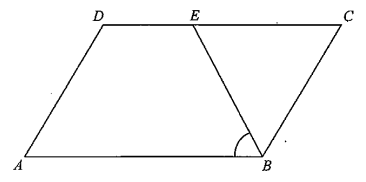

In the figure, \(ABCD\) is a parallelogram. \(E\) is a point lying on \(CD\) such that \(BE = CE\). If \(\angle ADC = 114^\circ\), then \(\angle ABE =\) ?

In a parallelogram, opposite angles are equal. Since \(\angle ADC = 114^\circ\), its opposite angle is
\[ \angle ABC = \angle ADC = 114^\circ .\]
Also \(\angle BCD = 180^\circ - 114^\circ = 66^\circ\), since \(AD\parallel BC\) makes \(\angle ADC\) and \(\angle BCD\) interior angles on the same side.
\(E\) lies on \(CD\), so \(B\), \(C\), \(E\) form \(\triangle BCE\) with \(BE = CE\).
This makes \(\triangle BCE\) isosceles, so its base angles at \(B\) and \(C\) are equal:
\[ \angle CBE = \angle BCE .\]
The distinct colour in the figure marks the equal sides \(BE\) and \(CE\).
Since \(E\) lies on \(CD\), ray \(CE\) is along ray \(CD\), so
\[ \angle BCE = \angle BCD = 66^\circ .\]
Therefore
\[ \angle CBE = 66^\circ .\]
Ray \(BE\) lies inside \(\angle ABC\), so
\[ \angle ABE = \angle ABC - \angle CBE \]
\[ = 114^\circ - 66^\circ = 48^\circ .\]
\[\boxed{\angle ABE = 48^\circ}\]
Hence the correct choice is A.